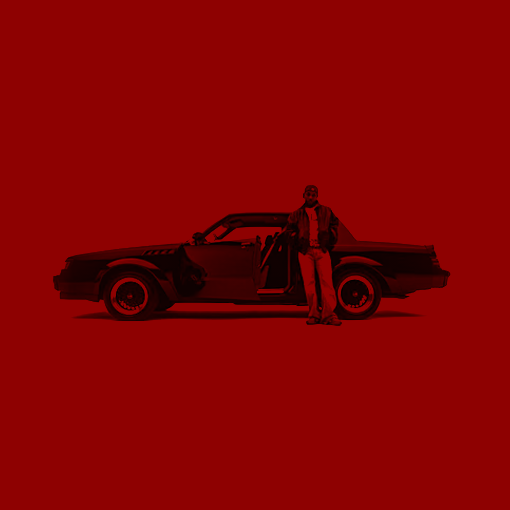

🐐 Who?
Kendrick Lamar Duckworth. He can freeze time by surprise-dropping an album because he’s one of the most popular rappers of the century...
💿 What?
Last week, Kendrick Lamar released “GNX,” with no advance notice, unless you count the heavy anticipation that has been hovering around him since the apex of his battle with Drake earlier this year. A squabble over hip-hop ethics became a cultural touchstone, leaving Lamar with a No. 1 hit and Drake with spiritual and professional bruises. He’s a man on an island, and contentedly so. That’s part of what made his feud with Drake, which began in March and stretched through the spring and summer, so bracing.
🤳 When?
Kendrick Lamar released GNX during a time when algorithms have redefined how art is consumed, shared, and valued. It's 2024 after all, right? There’s no push for quick virality—no coordinated TikTok challenges or “content-friendly” hooks designed to capture fleeting trends. By deliberately avoiding these mechanisms, Kendrick disrupts the cycle of immediacy and rewards listeners willing to engage deeply with his work.
🏝️ Where?
Kendrick Lamar’s GNX is a profound reflection of Los Angeles Black culture, blending his roots, personal evolution, and community experiences into a cohesive narrative.
🤖 Why?
GNX stands as a cultural jam against the algorithm, forcing us to confront Lanier’s pressing question: “Are we still able to have a conversation about reality, or has that been lost to the machines?”